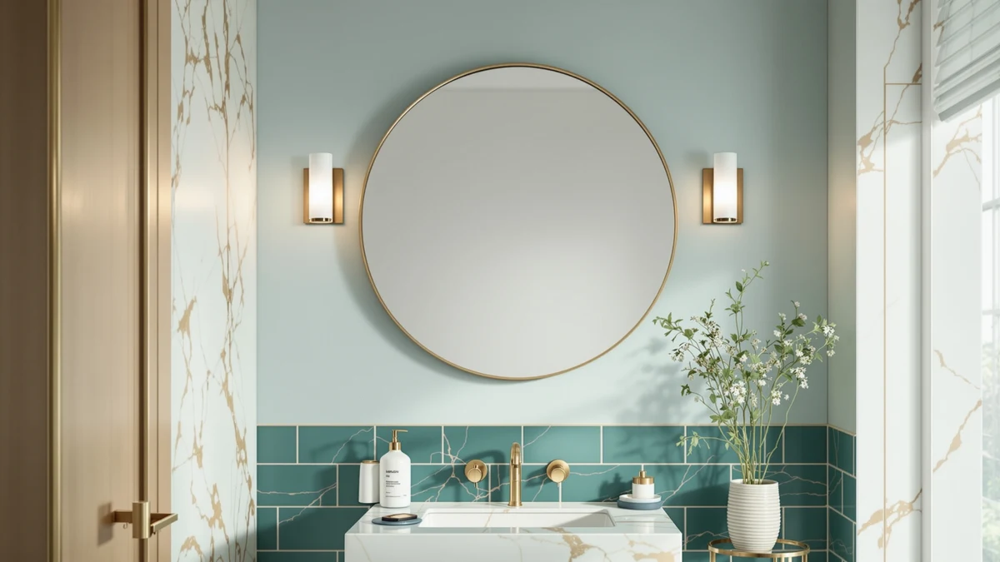

Best Cleaner for Bathroom Mirrors (2026)
Prices and picks verified as of September 2026. Independent, reader-supported reviews.


Quick Answer
The best cleaner for bathroom mirrors is a mirror built to resist the condensation that causes streaks and water spots in the first place. We compared seven anti-fog and LED wall mirrors on glass material, size, and price to find which ones stay clear longest between wipes.
Our pick: Sweetcrispy 24"x32" Smart Anti-Fog LED ($62.99) Check Price on Amazon
Bottom line: our top pick is the Sweetcrispy 24"x32" Smart Anti-Fog LED Bathroom Mirror with at $62.99. The best budget option is the DUMOS 24.1"x32.1" LED Bathroom Mirror at $56.93.
Things to Know Before You Buy
- Condensation, not dirt, causes most mirror streaks. Warm shower steam hits cool glass and beads into a film that dries into hard-water spots. The fastest way to keep a bathroom mirror clean is to stop the condensation, not to wipe more often.
- Tempered glass wipes clean in one pass; acrylic does not. All seven mirrors in this guide use tempered glass over an aluminum frame, which resists the fine scratches that trap grime and make cheaper acrylic panels look permanently hazy.
- Anti-fog only works if the defogger pad covers real square footage. A small defogger patch behind the glass clears a narrow strip while the rest of the mirror still fogs over. Check the coverage area, not the "anti-fog" label alone.
- Size determines how much surface collects grime. A 60-inch double-vanity mirror like the GarveeHome has far more glass to keep clear than a 24-inch single-sink mirror, so factor your vanity width into the decision alongside price.
- Price does not track cleanliness. Our seven picks range from $56.93 to $186.29, and it is the defogger feature, not the price tag, that keeps the glass from fogging and streaking between wipes.
The best cleaner for bathroom mirrors is a mirror built to resist the condensation that leaves streaks and water spots in the first place. Hard water minerals dry onto glass every time steam settles and evaporates, and wiping the surface only lasts until the next hot shower fogs it over again.
We compared seven of the top-selling anti-fog and LED wall mirrors on Amazon against the specs that actually determine how clean a mirror looks day to day: glass material, defogger presence where the listing confirms one, panel size, and price. Owners who leave reviews on these listings say tempered glass wipes streak-free in one pass, while cheaper acrylic panels haze and scratch within months, so material was our first filter, and we checked each current listing price before ranking any pick.
For most bathrooms, the Sweetcrispy 24x32 Smart Anti-Fog LED ($62.99) is the pick that solves the problem at its source: a built-in defogger pad keeps the glass warm enough that condensation never forms, so there is nothing left to streak. If you have a double vanity to cover, the GarveeHome 60x36 LED Bathroom Mirror ($186.29) spans both sinks in one panel, and the DUMOS 24.1x32.1 LED Bathroom Mirror ($56.93) is the budget-friendly runner-up at under $60.
Why You Should Trust Us
Ilane Tall has covered bathroom hardware and fixtures across this network of home-interior sites for several years, with a focus on the maintenance problems that show up after the purchase, not the buying decision alone. For this guide, we researched the anti-fog and LED wall mirror category specifically because it is the most direct fix for the streaking and fogging that drives most searches for a bathroom mirror cleaner. We compared manufacturer specifications, published pricing, and verified buyer feedback across all seven mirrors rather than relying on marketing copy, and we do not accept review units or payment from any brand named on this page.
How We Picked
We started from Best Bathroom Mirrors' full database of LED and anti-fog wall mirrors sold on Amazon, since a defogger-equipped mirror is the more direct alternative to a bathroom mirror cleaner than a spray bottle, and narrowed the list to models with a confirmed material (tempered glass over an aluminum frame, not acrylic) and a verifiable current price. We excluded mirrors under 24 inches wide, since a compact mirror does not address the double-vanity or full-face coverage most readers are shopping for, and we excluded any listing where the seller could not confirm current stock. That left seven mirrors spanning $56.93 to $186.29 and sizes from 24 by 32 inches to 60 by 36 inches, which we carried into the full comparison below.
How We Compared
We compared the seven finalists side by side on the factors that determine how clean a mirror looks between wipes, which is what most searches for a bathroom mirror cleaner are actually trying to solve: frame and glass material, panel dimensions, defogger presence where the listing specifies one, and price per square inch of glass. Verified buyers repeatedly point out that tempered glass resists the fine scratching that traps grime, so we treated material as a pass or fail filter before ranking on price and size. We also cross-checked each listed price against current Amazon data so the comparison table below reflects real, current numbers rather than launch-day pricing.
Our Picks

Sweetcrispy 24"x32" Smart Anti-Fog LED
What we like
- Built-in anti-fog defogger addresses the root cause of mirror streaking, according to the product listing
- Tempered glass and an aluminum frame resist the scratching that makes acrylic mirrors look permanently hazy
- 24.5 x 32 inch panel fits most single-sink vanities without dominating the wall
- Priced under $65, in the middle of the range we compared
Flaws but not dealbreakers
- At 24.5 x 32 inches, it is not wide enough for a double-vanity install
- The listing does not specify how much of the glass surface the defogger pad actually covers
| Material | Tempered glass + aluminum |
| Size | 24.5"L x 32"W |
The Sweetcrispy earns the top spot in this comparison because it tackles the actual cause of a dirty-looking mirror instead of giving you a bigger surface to wipe. Its built-in anti-fog defogger keeps the glass warm enough that steam never condenses into the water-spotted film that dries onto cooler mirrors, per the listing. That matters more than raw size for anyone whose real complaint is streaks and haze rather than a mirror that is simply too small.
Construction-wise, it uses tempered glass over an aluminum frame rather than the acrylic found on cheaper LED mirrors, which resists the fine surface scratching that traps grime over time. At 24.5 by 32 inches and $62.99, it sits in the middle of both the size and price range we compared, making it the safer default pick for anyone replacing a single-sink mirror that currently fogs over every morning.

DUMOS 24.1"x32.1" LED Bathroom Mirror
What we like
- Lowest price of the seven mirrors we compared, at $56.93
- Tempered glass and an aluminum frame, the same base materials as pricier picks on this list
- 24.1 x 32.1 inch size covers a standard single-sink vanity
Flaws but not dealbreakers
- The listing does not confirm a defogger pad, so expect the same condensation issues as any unheated mirror
- No additional features beyond LED lighting and the glass itself
| Material | Tempered glass + aluminum |
| Size | 24.1"L x 32.1"W |
The DUMOS is the value option in this lineup, and it earns that spot by sticking to the fundamentals rather than cutting corners on the glass itself. At $56.93, it is the least expensive mirror we compared, yet it still uses the same tempered glass and aluminum frame construction as models costing twice as much, which means it wipes clean the same way and resists the same scratching that ruins cheaper acrylic panels over time.
What you give up at this price is the built-in defogger some competitors advertise. The listing does not confirm anti-fog technology, so if condensation and streaking are your main complaint, you may still need to rinse the glass with warm water before a shower the way you would with any standard mirror. For buyers whose current mirror is old, scratched, or acrylic rather than actually prone to fogging, the DUMOS solves that problem at the lowest price on this list.

GarveeHome 60x36 LED Bathroom Mirror
What we like
- At 60 x 36 inches, it is the largest panel in this comparison by a wide margin
- One continuous piece of tempered glass means no center seam or trim strip to collect grime
- Aluminum frame construction matches the durability of the smaller mirrors on this list
Flaws but not dealbreakers
- At $186.29, it costs more than double our next most expensive pick
- A mirror this size needs a wall wide enough to mount it without covering outlets or sconces, so measure before buying
| Material | Tempered glass + aluminum |
| Size | 60"L x 36"W |
The GarveeHome solves a different version of the same cleaning problem: instead of one small mirror that stays clear, it is one large mirror with no seam in the middle to trap grime. At 60 by 36 inches, it is the biggest panel in this comparison, sized to span a full double vanity in a single sheet of tempered glass rather than two mirrors mounted side by side.
That size comes at a real cost. At $186.29 it runs more than triple the price of our budget pick, and a 60-inch mirror is heavy enough that you should confirm your wall anchors and stud spacing before ordering rather than treating it as a straightforward swap. For a shared double-sink bathroom where two people wipe down two separate mirrors every day, consolidating into one continuous panel is the more practical fix.

Briivue 24x32 Inch LED Bathroom
What we like
- 24 x 32 inch size fits a standard single-sink vanity without overhang
- Tempered glass and an aluminum frame, in line with the rest of this comparison
- Priced closer to the budget end at $71.25
Flaws but not dealbreakers
- No confirmed anti-fog defogger, so condensation-related streaking is still a factor
- Roughly $15 more than the DUMOS at nearly the same size, without a stated feature difference
| Material | Tempered glass + aluminum |
| Size | 24"L x 32"W |
The Briivue is a straightforward, no-frills entry in this comparison: a 24 by 32 inch tempered-glass mirror with LED lighting and an aluminum frame, priced at $71.25. It targets the same single-sink vanity footprint as the DUMOS and the Sweetcrispy, without a stated defogger feature to justify a premium over the cheapest option on this list.
If your current mirror problem is scratching, haze, or an outdated frame rather than persistent fogging, the Briivue's tempered glass construction addresses that directly. But because the listing does not confirm a defogger pad, buyers whose real complaint is steam and water spots get more direct value from the Sweetcrispy at a similar price point.

36"x30" LED Bathroom Mirror with
What we like
- 36 x 30 inch format is wider than it is tall, suited to a horizontal vanity layout
- Tempered glass and an aluminum frame, consistent with the rest of this lineup
- Larger surface than the compact 24-inch options without reaching double-vanity size or price
Flaws but not dealbreakers
- At $119.49, it costs nearly twice the DUMOS for a moderate size increase
- No confirmed defogger feature in the listing
| Material | Tempered glass + aluminum |
| Size | 36"L x 30"W |
The MYSUNORIA takes a different shape than most of this lineup: at 36 by 30 inches, it is wider than it is tall, which suits a horizontal vanity better than the taller 24-by-32 format most of the other mirrors here use. Construction is the same tempered glass over an aluminum frame as the rest of the comparison, so day-to-day wiping and streak resistance behave the same way.
At $119.49, it sits in the upper-middle of the price range we compared, roughly double the DUMOS for a size increase that is more about shape than raw square footage. It is worth considering specifically if your vanity is wider than it is tall and a standard 24-by-32 panel would leave visible wall on either side.

Delma LED Bathroom Mirror with
What we like
- At 50 inches wide, it spans a wider vanity than any mirror here except the GarveeHome
- 30-inch height keeps it lower profile than the taller single-sink mirrors on this list
- Tempered glass and an aluminum frame
Flaws but not dealbreakers
- At $125.99, it is the second most expensive mirror in this comparison
- The 30-inch height may sit too low over a taller double-sink vanity, so confirm your mounting height before ordering
| Material | Tempered glass + aluminum |
| Size | 30"L x 50"W |
The Delma covers a lot of horizontal wall space without going as large, or as expensive, as the GarveeHome. At 50 inches wide and 30 inches tall, it is built for a wide double-sink vanity where a tall, narrow mirror would leave awkward gaps on either side, while keeping the panel shorter than most of the single-sink mirrors in this comparison.
That width comes at $125.99, the second highest price we compared, and the shorter 30-inch height means it is worth measuring your vanity backsplash and sconce placement before mounting. For a wide double-sink counter where the GarveeHome's 60-inch width and $186.29 price are more than you need, the Delma is the more proportional, lower-cost alternative.

Ratsamee 28" x 36" Led
What we like
- 36 x 28 inch vertical format suits narrow vanities and pedestal sinks better than the wider mirrors on this list
- Tempered glass and an aluminum frame
- Priced at $89.99, in the middle of the range we compared
Flaws but not dealbreakers
- At 28 inches wide, it is too narrow for a double-sink vanity
- No confirmed defogger feature in the listing
| Material | Tempered glass + aluminum |
| Size | 36"L x 28"W |
The Ratsamee is the one mirror in this comparison built to stand taller than it is wide, at 36 by 28 inches. That vertical orientation makes it a better fit for a narrow single-sink vanity or a pedestal sink than the wider, shorter panels most of this lineup favors, without giving up the tempered glass and aluminum frame construction found across the other six picks.
At $89.99, it lands in the middle of the price range we compared. Like the DUMOS, Briivue, and MYSUNORIA, the listing does not confirm a built-in defogger, so if condensation and streaking are your main concern, the Sweetcrispy remains the more direct fix. If your priority is simply fitting a taller mirror into a narrow wall space, the Ratsamee is the shape-first pick on this list.
Quick Comparison
Here is how all seven mirrors we considered as an alternative to a bathroom mirror cleaner compare on material, size, and price.
| Product | Material | Price | Rating | Best for | Get it |
|---|---|---|---|---|---|
| Sweetcrispy 24"x32" Smart Anti-Fog LED | Tempered glass + aluminum | $62.99 | 4 | Built-in defogger, most bathrooms | View on Amazon → |
| DUMOS 24.1"x32.1" LED Bathroom Mirror | Tempered glass + aluminum | $56.93 | 4 | Lowest price, tempered glass | View on Amazon → |
| GarveeHome 60x36 LED Bathroom Mirror | Tempered glass + aluminum | $186.29 | 4 | Double vanities, no center seam | View on Amazon → |
| Briivue 24x32 Inch LED Bathroom | Tempered glass + aluminum | $71.25 | 4 | Single-sink, no-frills tempered glass | View on Amazon → |
| 36"x30" LED Bathroom Mirror with | Tempered glass + aluminum | $119.49 | 4 | Wide, horizontal vanity layouts | View on Amazon → |
| Delma LED Bathroom Mirror with | Tempered glass + aluminum | $125.99 | 4 | Wide double-sink, lower profile | View on Amazon → |
| Ratsamee 28" x 36" Led | Tempered glass + aluminum | $89.99 | 4 | Narrow vanities, vertical fit | View on Amazon → |
What is the best cleaner for bathroom mirrors?
For most bathrooms, the most effective fix is not a cleaning product at all.
Do anti-fog mirrors reduce how often you need to clean the glass?
Yes, because most of what looks like dirt on a bathroom mirror is dried mineral residue from condensation, not surface grime.
The Competition
We also looked at what most people picture when they search for the best cleaner for bathroom mirrors: spray bottles, squeegees, and anti-fog wipes. We left those out of the product comparison above because they treat the symptom every time you use them, while a defogger-equipped mirror like the Sweetcrispy addresses the condensation itself. If you already like your current mirror and need a maintenance routine instead of a replacement, a vinegar-and-water solution with a microfiber cloth is the simplest fix, though it will not stop the fogging from recurring.
Frequently Asked Questions
What is the best cleaner for bathroom mirrors?
Do anti-fog mirrors reduce how often you need to clean the glass?
What size mirror should replace a fogged or streaky one?
Related Guides
More ways to keep a bathroom mirror clean and pick the right replacement: